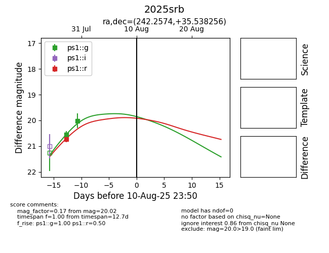

Target 2025srb at 2025-08-11 02:14, see:
YSE: ziggy.ucolick.org/yse/transient_detail/2025srb
alt names
2025srb (yse)
coordinates:
equatorial (ra, dec) = (242.2574,+35.53826)
galactic (l, b) = (56.9902,+47.42184)
photometry
last ps1::g=20.02, ps1::r=20.73
2 ps1::g, 1 ps1::r detections
